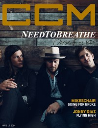

NeedToBreathe
 |
| October 2011 CCM Digital |
 |
| 15 April 2014 CCM Digital |
| 15 July 2016 CCM Digital |
Media coverage:
- Apr 2006 in CCM "This Year's Model: NeedToBreathe", by John J. Thompson
- May 2006 in HM "Hardnews: NeedToBreathe", by Matt Conner
- Jul 2006 in Relevant "Slices Spotlight: NeedToBreathe", by Tyler L. Clark
- Oct 2006 in CCM "Standing Room Only: NeedToBreathe", by Andy Argyrakis
- Jan 2007 in New Man "Guy Gear: Music: Shine On"
- Oct 2011 in CCM Digital "Tour Spotlight: Speak Now Tour, Allstate Arena, Rosemont, IL", by Andy Argyrakis
- Oct 2011 in CCM Digital "Settling Up: for NeedToBreathe, the day of reckoning is here", by Matt Conner
- Nov 2012 in HM "Live Report: ACL Fest 2012", by Doug Van Pelt, Kaela Van Pelt
- Mar 2014 in Relevant "NeedToBreathe", by Jack Riggins
- 15 Apr 2014 in CCM Digital "Oasis Found: NeedToBreathe Emerges From the Wasteland to the Promised Land", by Caroline Lusk
- May 2014 in HM "Down in the Rivers to Pray", by Chelc Eaves
- 1 Aug 2014 in CCM Digital "Tour Spotlight: Rivers In The Wasteland World Tour, House of Blues, Chicago, IL", by Andy Argyrakis
- 15 May 2015 in CCM Digital "Into the Woods", by Lindsay Williams
- 15 Jul 2016 in CCM Digital "The Road To Happiness", by Lindsay Williams
Albums & reviews:
2006: Daylight
- Mar 2006 in Relevant, by Tyler L. Clark
- Apr 2006 in CCM, by Jay Swartzendruber
- May 2006 in YouthWorker
- Aug 2007 in CCM, by Chad Bonham
- Sep 2007 in HM, by Matt Conner
- Sep 2007 in YouthWorker, by Chad Bonham
- Dec 2007 in Living With Teenagers, by Joy Fisher
- Mar 2010 in Living With Teenagers, by Randy Williams
- Nov 2011 in CCM Digital, by Matt Conner
- 15 Apr 2014 in CCM Digital, by Matt Conner
- 1 May 2015 in CCM Digital, by Andy Argyrakis
- 15 Jul 2016 in CCM Digital, by Andy Argyrakis
- Sep 2016 in Relevant
Award Summary (Nominations / Wins)
Dove Awards- 2008 Dove Awards
- Rock/Contemporary Recorded Song: "Signature of Divine (Yahweh)"
- Rock/Contemporary Album: The Heat
- Rock/Contemporary Recorded Song: "Washed By The Water"
- Group of the Year
- Rock/Contemporary Recorded Song: "Lay 'em Down"
- Rock/Contemporary Album: The Outsiders
- Group of the Year
- Rock/Contemporary Recorded Song: "Something Beautiful"
- Group of the Year
- Rock/Contemporary Recorded Song: "Slumber"
- Rock/Contemporary Album: The Reckoning
- Short Form Music Video: "Keep Your Eyes Open"
- Rock/Contemporary Recorded Song: "Keep Your Eyes Open"
- Artist
- Rock/Contemporary Recorded Song: "Multiplied"
- Rock/Contemporary Album: Rivers in the Wasteland
- Song: "Multiplied"
- Rock/Contemporary Recorded Song: "Brother"
- Rock/Contemporary Album: Live From the Woods
- Song: "Brother"
- Rock/Contemporary Recorded Song: "Happiness"
- Recorded Music Packaging: HARD LOVE
- Rock/Contemporary Recorded Song: "Hard Love"
- Rock/Contemporary Album: HARD LOVE
- Contemporary Christian Artist
- Artist
- Rock/Contemporary Recorded Song: "Walking On Water"
- Rock/Contemporary Recorded Song: "Forever On Your Side (feat. Johnnyswim)"
- Rock/Contemporary Album: Acoustic Live Vol 1
- 2014 Grammy Awards
- Best Contemporary Christian Music Performance/Song: "Multiplied"
© 2011 CMnexus. Last updated September 2019. Contact: editor -AT- cmnexus -DØT- org About